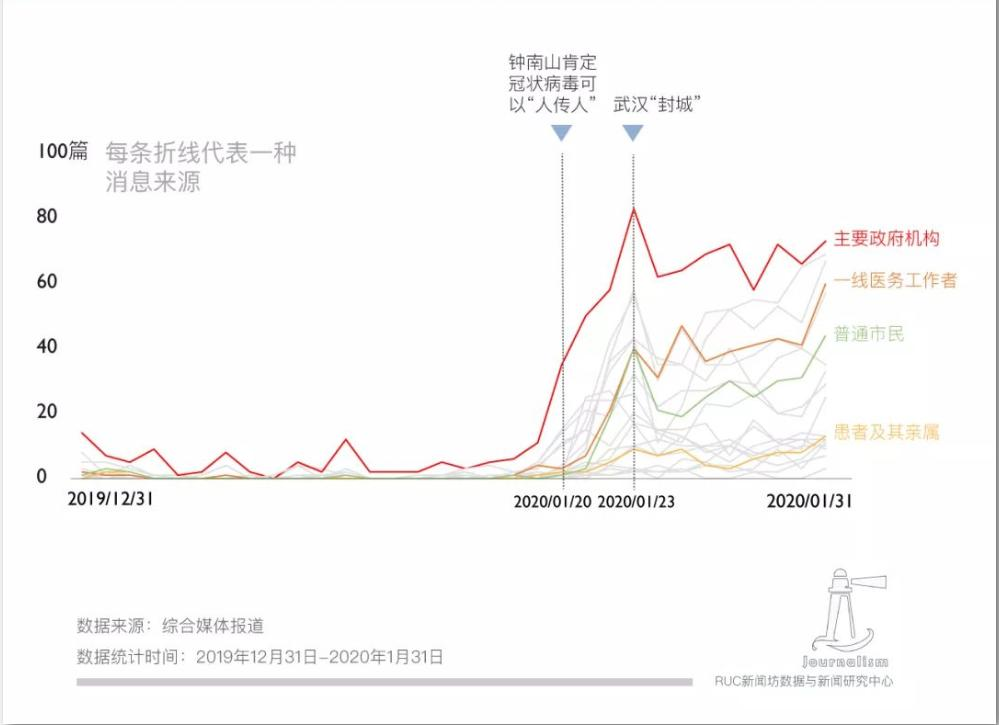

<!DOCTYPE HTML>

<html>
<head>
<meta http-equiv="Content-Type" content="text/html"; charset="utf-8"/>
<title>倒计时</title>
</head>
<body><SCRIPT LANGUAGE="JavaScript">
var maxtime = 30*30
timer = setInterval("CountDown()",1000);
function CountDown(){
    if(maxtime>=0){
        minutes = Math.floor(maxtime/30);
        seconds = Math.floor(maxtime%30);
        msg = "距离考试结束还有"+minutes+"分"+seconds+"秒";
        document.all["timer"].innerHTML=msg;
        --maxtime
    }
    else {
        clearInterval(timer);
        alert("时间到，考试结束！");
    }
}
</SCRIPT>
<div id="timer" style="color:black"></div>
</body>
</html>

<html>
<body bgcolor="#d0d0d0">

<h2 align="center">226篇肺炎报道观察：谁在新闻里发声？</h2> 

<p style="font-size:15px">①最深的恐惧是对未知的恐惧,<u>面对新型冠状病毒这一全然陌生的敌人,阅读新闻,成为一个公民在如此灾难面前,保持知情、消解恐慌、积极防护最简单最有效的办法。</u>这场灾难影响多维复杂,涉及多个专业领域,在撬动事实时,媒体选择让谁发声,成了一个值得研究的问题。RUC新闻坊对2286篇相关报道做了全面的观察、分析,有以下发现:</p>
<p style="font-size:15px">②一、疫情前期媒体发声受限,导致预警滞后。<u>学界普遍认为,健康传播的透明公开能帮助公众正确认知公共卫生事件,遏制谣言或错误信息的流传,避免社会恐慌,建立切实可行的防范机制。</u>官方公开信息不及时、不完善,极易造成媒体对疫情严重性的误判和报道的迟滞,不能起到有效预警。</p>
<p align="center">

<h4 align="center"> 图片1-1 </h4>
</p>
<p style="font-size:15px">③二、“人”在信源中的地位上升。随着疫情的扩散,媒体消息来源更加多元,出现下沉的趋势,“人”的地位受到重视。<u>新京报、中国青年报等多家媒体发布征文,给有切身体会的“风暴中心”的人提供了发声的平台。</u><span style="border-bottom: 4px dotted">他们</span>作为历史的见证者,更主动地参与到内容生产之中,大大丰富了报道的体裁和主题,提供了多元的视角,为历史留下了更为鲜活的底稿。</p>
<p style="font-size:15px">④三、越靠近现场,情感倾向越强烈。在19项编码的消息来源中,记者、一线医务人员、患者及其家属、普通市民、网民、其他公众人物、医疗机构作为信源的稿件与其他信源的稿件相比,因为融入了更多的切身经历,具有更鲜明的情感倾向。</p>
<p style="font-size:15px">⑤四、<u>报道倾向总体呈中性,党媒更偏正面。</u>三类媒体中,党媒的报道更偏正面,从疫情中寻找正能量,对疫情中的做法、成绩进行肯定,是整块抗疫情绪版图中情感色彩最鲜亮的模块。相比之下,市场化媒体和自媒体正面报道比负面报道少。市场类媒体中立报道比例最高,接近90%。自媒体负面倾向的报道接近正面的2倍。说明这两类媒体更多地着力于对疫情中存在的问题的揭示、质疑和反思。……</p>

<p style="font-size:15px;text-indent:30px;">[数据说明]</p>
<p style="font-size:15px;text-indent:30px;">1.为了对比不同性质媒体的报道差异,选取了新华社、人民日报、中国青年报、中国新闻周刊(隶属中新社)、健康报(国家卫健委旗下报纸)5家媒体作为党媒样本,财新、界面新闻、澎湃新闻、三联生活周刊、人物、第一财经6家媒体作为市场化媒体样本,丁香园、八点健闻作为垂直领域权威自媒体样本。(编者注:有专家认为,从广义上看,我国境内所有公开发行的媒体都可以算是党媒,本研究中采用的是狭义的“党媒”概念,即本研究中的“党媒”相对“市场化媒体”偏机关报刊性质,后者对前者偏市场化运营。)</p>
<p style="font-size:15px;text-indent:30px;">2.为了对比湖北当地媒体和其他媒体地区报道的区别,选择了湖北、广东、北京三地做比较,并将长江日报、楚天都市报、广州日报、南方都市报、新京报、北京青年报6家地方级媒体作为分析对象。北京和广东都曾属SARS(严重急性呼吸综合征)疫区,且是目前为止防控疫情扩散压力较大的地区。</p>
<p style="font-size:15px;text-indent:30px;">3.在具体样本选取上,本研究以电子版报纸及官方公众号作为主要样本收集来源,过滤掉直接转载、无信源标注的简单网络信息整合等非原创报道。</p>
<p align="right" style="font-size:15px">(摘编自人大新闻系RUC新闻坊《2286篇肺炎报道观察:谁在新闻里发声?》)</p>


</body>
</html>

<html>
<body bgcolor="#d0d0d0">
<p style="font-size:15px"><strong>指导语：学校举办了“理性辨识网络信息”的活动，你准备分析报道的信源，调查肺炎相关报道的真实性和客观性，并在活动上发言。请你回答下列题目，并作出活动的初步设计。</strong></p>
<p style="font-size:15px">1.第3段中的“他们”可能指<select>
    <optgroup label="请选择">
        <option value="请选择">请选择</option>
        <option value="A">A</option>
        <option value="B">B</option>
        <option value="C">C</option>
        <option value="D">D</option>
    </optgroup>
</select> 
<fieldset>
A. 生物学家
<br />B. 钟南山团队科研人员
<br />C. 新媒体工作人员
<br />D. 一线医护人员</fieldset></p>

<p style="font-size:15px">2.下列有关材料的分析，<span style="border-bottom: 1px dotted">不正确</span>的一项是<select>
    <optgroup label="请选择">
        <option value="请选择">请选择</option>
        <option value="A">A</option>
        <option value="B">B</option>
        <option value="C">C</option>
        <option value="D">D</option>
    </optgroup>
</select>
<fieldset>A.RUC新闻工作坊分析了不同性质的媒体表现差异,是为了寻找“媒体选择让谁发声”。
<br />B.新京报、中国青年报等媒体向“风暴中心”的人征稿，这是“人”在信源中的地位上升的最主要原因。
<br />C.官方公开信息不及时、不完善,可见“造成恐慌的不是真相,而是真相的缺席”。
<br />D.新闻工作者正努力以普通人为报道的主角。</fieldset></p>

<p style="font-size:15px">3.下列不能作为论据，证明RUC新闻坊的结论是可靠的是<select>
    <optgroup label="请选择">
        <option value="请选择">请选择</option>
        <option value="A">A</option>
        <option value="B">B</option>
        <option value="C">C</option>
        <option value="D">D</option>
    </optgroup>
</select> <fieldset>A.采访了大量相关人员。
<br />B.对比了党媒和其他权威自媒体的新闻。
<br />C.对比了疫情严重的地区和其他地区的新闻报道。
<br />D.过滤了非原创报导。</fieldset></p>

<p style="font-size:15px">4.本文的主旨是<select>
  <optgroup label="请选择">
      <option value="请选择">请选择</option>
      <option value="A">A</option>
      <option value="B">B</option>
      <option value="C">C</option>
      <option value="D">D</option>
  </optgroup>
</select> <fieldset>A.RUC新闻坊整理了多家媒体对新冠肺炎的报导。
<br />B.阅读新闻有利于在灾难中保持冷静。
<br />C.对于新冠肺炎的报道整体客观。
<br />D.阅读新闻时应当多方比较，客观判断。</fieldset></p>


<p style="font-size:15px">5.请判断以下来自文本的内容是事实还是评价。
    <br />①面对新型冠状病毒这一全然陌生的敌人,阅读新闻,成为一个公民在如此灾难面前,保持知情、消解恐慌、积极防护最简单最有效的办法。
	<fieldset>
        <div>
          <input type="radio" id="A." name="drone" value="A.事实"
                 checked>
          <label for="A.事实">A.事实</label>
        </div>
    
        <div>
          <input type="radio" id="B." name="drone" value="评价">
          <label for="B.评价">B.评价</label>
        </div>
    </fieldset>
</p>

<p style="font-size:15px">②学界普遍认为,健康传播的透明公开能帮助公众正确认知公共卫生事件,遏制谣言或错误信息的流传,避免社会恐慌,建立切实可行的防范机制。
    <fieldset>
        <div>
          <input type="radio" id="A." name="email" value="第二题"
                 checked>
          <label for="A.事实">A.事实</label>
        </div>
    
        <div>
          <input type="radio" id="B." name="email" value="第二题">
          <label for="B.评价">B.评价</label>
        </div>
    </fieldset>
</p>

<p style="font-size:15px">③新京报、中国青年报等多家媒体发布征文,给有切身体会的“风暴中心”的人提供了发声的平台。
    <fieldset>
        <div>
          <input type="radio" id="A." name="add" value="第二题"
                 checked>
          <label for="A.事实">A.事实</label>
        </div>
    
        <div>
          <input type="radio" id="B." name="add" value="第二题">
          <label for="B.评价">B.评价</label>
        </div>
    </fieldset>
</p>

<p style="font-size:15px">④报道倾向总体呈中性,党媒更偏正面。
    <fieldset>
        <div>
          <input type="radio" id="A." name="abb" value="第二题"
                 checked>
          <label for="A.事实">A.事实</label>
        </div>
    
        <div>
          <input type="radio" id="B." name="abb" value="第二题">
          <label for="B.评价">B.评价</label>
        </div>
    </fieldset>
</p>

<p style="font-size:15px">⑤说明这两类媒体更多地着力于对疫情中存在的问题的揭示、质疑和反思。
    <fieldset>
        <div>
          <input type="radio" id="A." name="abc" value="第二题"
                 checked>
          <label for="A.事实">A.事实</label>
        </div>
    
        <div>
          <input type="radio" id="B." name="abc" value="第二题">
          <label for="B.评价">B.评价</label>
        </div>
    </fieldset>
</p>
<p style="font-size:15px">6.请你描述图1-1中,随着时间变化媒体消息来源的特点(35字以内,包括标点)。
    <br /><textarea name="5题" rows="5" cols="60" wrap="virtual"></textarea>
</p>

<p style="font-size:15px">7.你在日常生活中读到和covid-19相关的报导时,要怎样分析这份报导是否客观、准确?请你写出三条不同的方法。
    <br /><input type="text" name="①" value="①" size="105" maxlength="1500px"/>
    <br /><input type="text" name="②" value="②" size="105" maxlength="1500px"/>
    <br /><input type="text" name="③" value="③" size="105" maxlength="1500px"/>
</p>
</body>
</html>

<html lang="en">
<body>
<form target="_parent" action="倒计时.html">
  <button style="position:relative; left:460px; top: 0px;" id="open_btn" class="btn">提交答案</button>
</form>
</body>
</html>

<html>

<frameset cols="50%,50%">

  <frame src="文章.html">
  <frame src="题目.html">

</frameset>

</html>

<body>
    <style type="text/css">body {
        margin: 0;
        padding: 0;
        font-family: sana-fserif;
        background: #d0d0d0;
    }
    .box{
    width: 300px;
    padding: 40px;
    position: absolute;   /* 绝对定位，相对于父标签来进行定位 */
    top: 50%;
    left: 50%;
    transform: translate(-50%,-50%); 
    background: #fbf9f9;
    text-align: center;  /*表单中内容居中*/
}
/* 设置标题样式 */
.box h1{
    color: rgb(6, 6, 6);    /* 设置字体颜色 */
    text-transform: uppercase;  /* 将字体全部设置成大写字母  */
    font-weight: 500;  /*  设置字体粗细   */
}
/* 设置用户名输入框和密码输入框样式 */
.box input[type="text"],.box input[type="password"]{
  border-radius: 24px;
  border: 2px solid #010101;
  background: none;
  display: block;
  margin: 20px auto;
  text-align: center;
  padding: 14px 10px;
  width: 200px;
  outline: none;
  color: rgb(16, 15, 15);     /* 设置输入框中竖线的颜色 */
  transition: 0.25s;   /* 设置元素过渡效果 */
}
/* 设置文本框获得焦点时的样式 */
.box input[type="text"]:focus,.box input[type="password"]:focus{
    width: 280px;
    border-color: #4f5250;
}
/* 设置提交按钮的样式 */
.box input[type="submit"]{
  border-radius: 24px;
  border: 2px solid #070808;
  background: none;
  display: block;
  margin: 20px auto;
  text-align: center;
  padding: 14px 40px;
  outline: none;
  color: rgb(8, 8, 8);     /* 设置输入框中竖线的颜色 */
  transition: 0.25s;
  cursor: pointer;    /* 设置光标的样式 */
}
/* 设置鼠标移人到按钮上的样式 */
.box input[type="submit"]:hover{
    background: #b5b9b7;
}
    </style>
    <form class="box" action="平行框架.html" method="POST">
        <h1>考生请登录</h1>
        <input type="text" name="" placeholder="用户名">
        <input type="password" name="" placeholder="密码">
        <input type="submit" name="" value="登录">
    </form>
    </body>


    <html>
 <head>
  <title>倒计时</title>  
  <meta http-equiv="Content-Type" content="text/html; charset=gkb"/>   
 </head>
 <body align="center" bgcolor="#d0d0d0">
  <!--先编写好网页布局-->
  <h1>提交成功</h1>
<span id="second" >5</span>
  <span>秒后回到登录页面</span>
  <a href="登陆界面.html">返回</a>
  <script type="text/javascript">  
    var num=document.getElementById("second").innerHTML;
   //获取显示秒数的元素，通过定时器来更改秒数。

    function count()
    {
        num--;
        document.getElementById("second").innerHTML=num;
        if(num==0)
        {
            location.assign("登陆界面.html");
        }
    }
    setInterval("count()",1000);
   //通过window的location和history对象来控制网页的跳转。
    function back()
    {
       window.history.back();
   }

 </script> 
</body>
</html>
